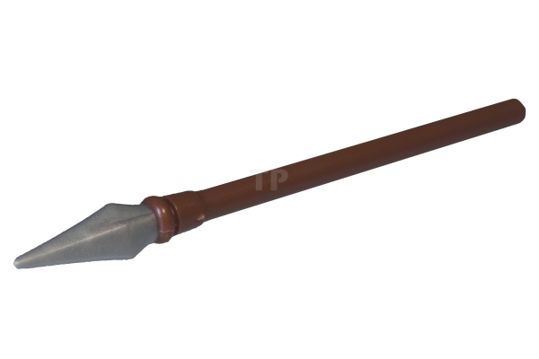
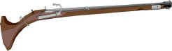
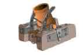
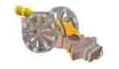

Welcome to the English Civil War, from 1642-1649
On this web page we will cover, the land controlled
by each army, the battles, the weapons and the two different sides in
the war.
- The English Civil war began on
22 August 1642.
- The English Civil War
ended on
March 1649.
- By the end of the war
there were roughly around 200,000 deaths.
Map of the Civil War
This map shows land controlled by each party in The
English Civil War. As you can see, by the end of the war, the
Parliamentarians had control over most of the country. This meant that
the Roundheads could easily take control of the whole country and
eventually win the war.
The main turning point in the war was the battle of Naesby in June
1645, as the Parliamentarians won the battle and had acsess to more
armour and weapons.
At the beginning of the war the Royalists had more land and money,
so did well to begin with, until the Roundheads came up with The New
Model Army.
The Battles
There were only four major battles in The English
Civil war, even though it went on for around seven years.
The first battle was the Battle of Edge Hill in October 1642. As this
battle was inconclusive in victory, all it really did was cost both
parties soldiers and weapons.
The Battle of Adwalton Moor was a Royalist victory, so this meant, a)
The Royalists gained money, land and confidence from this battle, b) The
Parliamentarians had to really step there game up, as they had just lost
troops, money and land to the Royalists and knew they were on the back
foot now.
The Battle of Marston Moor would be a decisive victory for the
Roundheads as they had developed their New Model Army and the Royalists
weren't expecting it when they arrived ripe and ready for the battle.
This meant it was an easy win for the Parliamentarians.
The Battle of Naseby was a real turning point in this war as over twice
the amount of troops from the Cavaliers side compared to the Roundheads.
This was expected however as the Parliamentarians had around double the
troops for the battle, but King Charles decided to carry out the fight
anyway.
The Weapons
The weapons of the English Civil war consisted but
are not limited to these weapons below.
The Pike:  This
was a long pokey stick that was used to stop enemy charges with horses
as shown in the background image.
The Musket: 
This gun was used to fire from long distances at high speed and
velocity.
The Mortar:  This Artillery cannon like
shooter fired large explosive balls high into the sky, which then
rained back down to the ground and exploded enemy territory.
The cannon: 
This cannon's main use is to strike fear into the enemy as it was not
very effective in battle
The Royalists (The Cavaliers)
The Parliamentarians (The Roundheads)